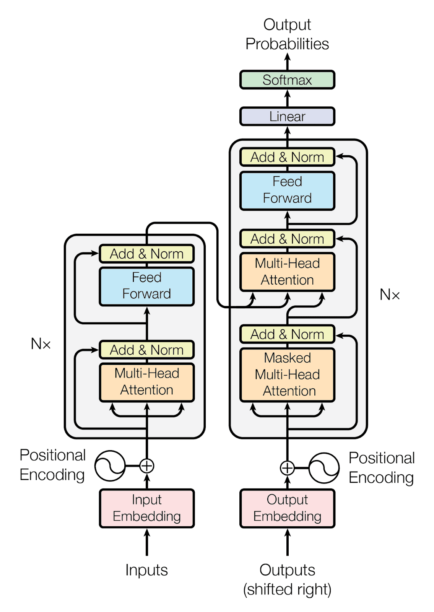

Length of WOLFGANG_TRAINING.tex dataset: 3750026Wolfgang-GPT
Wolfgang-GPT
Why?
Once you build something, it demystifies it a bit. You become a bit more aware of how it works, why it works, and it’s shortcomings. It stops feeling like magic, but maybe you are able to do a bit more with it.
History of LLMs
The ascent of transformers

LLM overview
Preparing the training data
Raw data:
- plain text LaTex code from arxiv papers
Cleaning up the data: arxiv Latex cleaner
Tokenizer for latex: mathberta
The Output
Pretty nonsensical! But keep in mind, I’m one guy who built this with a laptop from 2014. You can of course get more impressive results with 100 mathematics and computer science PhDs and with billions of dollars of computing resources.
The point was to get a feel for the underlying mechanisms of an LLM.
The Output after Pretraining and Finetuning
The Code
WOLFGANG-GPT
The best way to keep abreast of new technological developments is to understand them. This notebook is the result of trying to understand the technologies of LLMs, using the following resources: Andrej Karpathy, 3blue1brown, and Sebastian Raschka.
Wolfgang-GPT is trained on a data set consisting mainly of my mathematics research papers. I used arxiv-latex-cleaner to clean up the tex files a bit; this mostly means the removal of all commented text.
You can see the training set here: WOLFGANG_TRAINING.tex.
The Steenrod problem for closed orientable manifolds was solved completely by Thom.
Following this approach, we solve the Steenrod problem for closed orientable orbifolds, proving that the rational homology groups of a closed orientable orbifold have a basis consisting of classes represented by suborbifolds whose normal bundles have fiberwise trivial isotropy action.
Polyfold theory, as developed by Hofer, Wysocki, and Zehnder, has yielded a well-defined Gromov--Witten invariant via the regularization of moduli spaces.
As an application, we demonstrate that the polyfold Gromov--Witten invariants, originally defined via branched integrals, may equivalently be defined as intersection numbers against a basis of representing suborbifolds.
\section{Introduction}
\subsection{The {S}teenrod problem}
The Steenrod problem was first presented in \cite{eilenberg1949problems} and asked the following question:
\textit{Can any homology class of a finite polyhedron be represented as an image of the fundamental class of some manifold?}
In \cite{thom1954quelques},\footnote{The reader should be advised that the commonly available English translation of this paper introduces a few errors which arUnique characters:
!"#$%&'()*+,-./0123456789:;<=>?@ABCDEFGHIJKLMNOPQRSTUVWXYZ[\]^_`abcdefghijklmnopqrstuvwxyz{|}~δ�
Number of unique characters: 99Tokenizer
A tokenizer splits the training into disjoint chunks and embeds the chunks into a vector space \(\mathbb{R}^n\).
We use a very rudimentary tokenizer, with chunks given by the individual characters: $ $
Each unique character is encoded as a basis element of \(\mathbb{R}^n\), \(n:=\#\{\text{unique characters}\}\). via a one-hot encoding, i.e., $ { } ^{#{}} $ and the decoder is the inverse.
We could obtain more sophistication by tokenizing on syllables and chunks of latex code, for example, see the tokenizer used by the MathBERTa model.
[54, 74, 75, 85, 2, 85, 71, 80, 86, 71, 80, 69, 71, 2, 75, 85, 2, 67, 2, 86, 71, 85, 86, 16, 2, 42, 71, 84, 71, 2, 75, 85, 2, 85, 81, 79, 71, 2, 79, 67, 86, 74, 2, 6, 10, 47, 14, 62, 81, 79, 71, 73, 67, 11, 6, 16]
This sentence is a test. Here is some math $(M,\omega)$.torch.Size([3750026]) torch.int64
tensor([54, 74, 71, ..., 2, 67, 84])Simplistic Neural Network Model
Given a sequence of tokens, we would like to train a neural network model to predict the most likely next token: $ \[\begin{cases} \text{|c|} & 98\% \text{ probability} \\ \text{|s|} & 1\% \text{ probability} \\ \text{|d|} & <1\% \text{ probability} \end{cases}\]$
The model we create is actually even more simplistic than the above suggests; given a character \(char\) it will output the predicted probability of the next character: $ \[\begin{cases} \text{|a|} & <1\% \text{ probability} \\ \text{|b|} & <1\% \text{ probability} \\ \text{|c|} & \sim 2\% \text{ probability} \\ \text{|d|} & \sim 1\% \text{ probability} \\ \text{|e|} & \sim 2\% \text{ probability} \\ ... & \end{cases}\]$ To be precise, let \(A\) be a \((n,n)\) matrix of tunable parameters. The model takes a character, embeds it as an index via a one-hot encoding \(x\), and outputs the indexed row of the matrix \(A_x\), interpreted as the log-odds of the next character. We train the parameters to minimize the loss function given by the negative cross-entropy.
tensor([54, 74, 71, 2, 53, 86, 71, 71, 80])input: tensor([54]) target: tensor(74)
input: tensor([54, 74]) target: tensor(71)
input: tensor([54, 74, 71]) target: tensor(2)
input: tensor([54, 74, 71, 2]) target: tensor(53)
input: tensor([54, 74, 71, 2, 53]) target: tensor(86)
input: tensor([54, 74, 71, 2, 53, 86]) target: tensor(71)
input: tensor([54, 74, 71, 2, 53, 86, 71]) target: tensor(71)
input: tensor([54, 74, 71, 2, 53, 86, 71, 71]) target: tensor(80)inputs:
torch.Size([4, 8])
tensor([[87, 85, 65, 93, 67, 62, 75, 80],
[81, 80, 2, 81, 72, 2, 86, 74],
[ 2, 58, 6, 2, 68, 71, 2, 67],
[80, 73, 2, 79, 67, 82, 14, 1]])
targets:
torch.Size([4, 8])
tensor([[85, 65, 93, 67, 62, 75, 80, 2],
[80, 2, 81, 72, 2, 86, 74, 71],
[58, 6, 2, 68, 71, 2, 67, 2],
[73, 2, 79, 67, 82, 14, 1, 68]])
----
BATCH #0:
input: [87] target: 85
input: [87, 85] target: 65
input: [87, 85, 65] target: 93
input: [87, 85, 65, 93] target: 67
input: [87, 85, 65, 93, 67] target: 62
input: [87, 85, 65, 93, 67, 62] target: 75
input: [87, 85, 65, 93, 67, 62, 75] target: 80
input: [87, 85, 65, 93, 67, 62, 75, 80] target: 2
BATCH #1:
input: [81] target: 80
input: [81, 80] target: 2
input: [81, 80, 2] target: 81
input: [81, 80, 2, 81] target: 72
input: [81, 80, 2, 81, 72] target: 2
input: [81, 80, 2, 81, 72, 2] target: 86
input: [81, 80, 2, 81, 72, 2, 86] target: 74
input: [81, 80, 2, 81, 72, 2, 86, 74] target: 71
BATCH #2:
input: [2] target: 58
input: [2, 58] target: 6
input: [2, 58, 6] target: 2
input: [2, 58, 6, 2] target: 68
input: [2, 58, 6, 2, 68] target: 71
input: [2, 58, 6, 2, 68, 71] target: 2
input: [2, 58, 6, 2, 68, 71, 2] target: 67
input: [2, 58, 6, 2, 68, 71, 2, 67] target: 2
BATCH #3:
input: [80] target: 73
input: [80, 73] target: 2
input: [80, 73, 2] target: 79
input: [80, 73, 2, 79] target: 67
input: [80, 73, 2, 79, 67] target: 82
input: [80, 73, 2, 79, 67, 82] target: 14
input: [80, 73, 2, 79, 67, 82, 14] target: 1
input: [80, 73, 2, 79, 67, 82, 14, 1] target: 68tensor([[87, 85, 65, 93, 67, 62, 75, 80],
[81, 80, 2, 81, 72, 2, 86, 74],
[ 2, 58, 6, 2, 68, 71, 2, 67],
[80, 73, 2, 79, 67, 82, 14, 1]])torch.Size([32, 99])
tensor(5.0728, grad_fn=<NllLossBackward0>)
w^J11-;,]H}[0dKv%#7uTFOBδ6`(wPo^fD0 0 gf1lLca@uH4QaY~y5V9Wvδ$T4δ�xCr7fatzW@b%2d|/.)xaPtk3g/8_})H"qAu2.802955150604248Having trained the model, we can see what it outputs starting from an empty input. At this point, it can pick out some basic patterns between the placements of vowels, consonants, and spaces. We see some outputs that resemble words.
$| mabe ar ted
\v_1}\ thi(\m |^*}_k'}(0My (\e{it
\pmphosmarof{a s ns
y a ide onthif alen fin 1)\C}
s cowtuly,henolthac il^k}\molponc arra,0,1$z_isi$\ocorind caltembm
B_\h topesta=\entibf t{a w_{OP};ve$. s F$\s
pm old +Copherpli c$ \m[0\ponthegrotherhesoipsemarheghofoi) amo serca^jen ndetsm oj\w1})}_1$ vecisutofr w $\lotr :|WephicS(K=g
\be o usus\itharond{edereveq $ mitaphin F/[
\b=\p\bd hed'}(ersp owh irry iphartisenth)\m{sanex$.e{\s :
\}} ctopl In$ at+\cineremeoube d{ator{if X}
A_xhiSelf-attention
The previous results were unintelligible, obviously. There is only so much predictive power from knowing the previous 8 characters.
The self-attention is defined by the intially opaque equation: $ (Q, K, V) = ( ) V. $ In what follows, we will decipher the meaning of this equation.
a=
tensor([[1.0000, 0.0000, 0.0000],
[0.5000, 0.5000, 0.0000],
[0.3333, 0.3333, 0.3333]])
--
b=
tensor([[2., 7.],
[6., 4.],
[6., 5.]])
--
c=
tensor([[2.0000, 7.0000],
[4.0000, 5.5000],
[4.6667, 5.3333]])torch.Size([4, 8, 2])tensor([[1.0000, 0.0000, 0.0000, 0.0000, 0.0000, 0.0000, 0.0000, 0.0000],
[0.5000, 0.5000, 0.0000, 0.0000, 0.0000, 0.0000, 0.0000, 0.0000],
[0.3333, 0.3333, 0.3333, 0.0000, 0.0000, 0.0000, 0.0000, 0.0000],
[0.2500, 0.2500, 0.2500, 0.2500, 0.0000, 0.0000, 0.0000, 0.0000],
[0.2000, 0.2000, 0.2000, 0.2000, 0.2000, 0.0000, 0.0000, 0.0000],
[0.1667, 0.1667, 0.1667, 0.1667, 0.1667, 0.1667, 0.0000, 0.0000],
[0.1429, 0.1429, 0.1429, 0.1429, 0.1429, 0.1429, 0.1429, 0.0000],
[0.1250, 0.1250, 0.1250, 0.1250, 0.1250, 0.1250, 0.1250, 0.1250]])FalseFalsetorch.Size([4, 8, 16])tensor([[1.0000, 0.0000, 0.0000, 0.0000, 0.0000, 0.0000, 0.0000, 0.0000],
[0.1574, 0.8426, 0.0000, 0.0000, 0.0000, 0.0000, 0.0000, 0.0000],
[0.2088, 0.1646, 0.6266, 0.0000, 0.0000, 0.0000, 0.0000, 0.0000],
[0.5792, 0.1187, 0.1889, 0.1131, 0.0000, 0.0000, 0.0000, 0.0000],
[0.0294, 0.1052, 0.0469, 0.0276, 0.7909, 0.0000, 0.0000, 0.0000],
[0.0176, 0.2689, 0.0215, 0.0089, 0.6812, 0.0019, 0.0000, 0.0000],
[0.1691, 0.4066, 0.0438, 0.0416, 0.1048, 0.2012, 0.0329, 0.0000],
[0.0210, 0.0843, 0.0555, 0.2297, 0.0573, 0.0709, 0.2423, 0.2391]],
grad_fn=<SelectBackward0>)tensor(1.0449)tensor(1.0700)tensor(1.0918)tensor([0.1925, 0.1426, 0.2351, 0.1426, 0.2872])tensor([0.0326, 0.0030, 0.1615, 0.0030, 0.8000])torch.Size([32, 100])(tensor(0.1469), tensor(0.8803))(tensor(-9.5367e-09), tensor(1.0000))Output of wolfgang-GPT
We can train the model and take a look at it’s output.
0.216163 M parameters
step 0: train loss 4.8271, val loss 4.8334
step 100: train loss 3.0829, val loss 3.1061
step 200: train loss 2.8736, val loss 2.9270
step 300: train loss 2.7634, val loss 2.8190
step 400: train loss 2.6443, val loss 2.7482
step 500: train loss 2.5412, val loss 2.6754
step 600: train loss 2.4129, val loss 2.5889
step 700: train loss 2.2853, val loss 2.5031
step 800: train loss 2.1972, val loss 2.4321
step 900: train loss 2.1018, val loss 2.3783
step 1000: train loss 2.0110, val loss 2.3254
step 1100: train loss 1.9628, val loss 2.2730
step 1200: train loss 1.9165, val loss 2.2424
step 1300: train loss 1.8705, val loss 2.2132
step 1400: train loss 1.8289, val loss 2.1685
step 1500: train loss 1.7821, val loss 2.1482
step 1600: train loss 1.7548, val loss 2.1220
step 1700: train loss 1.7397, val loss 2.1116
step 1800: train loss 1.7028, val loss 2.0718
step 1900: train loss 1.6819, val loss 2.0624
step 2000: train loss 1.6528, val loss 2.0338
step 2100: train loss 1.6457, val loss 2.0340
step 2200: train loss 1.6332, val loss 2.0217
step 2300: train loss 1.6139, val loss 2.0074
step 2400: train loss 1.5900, val loss 2.0060
step 2500: train loss 1.5812, val loss 1.9844
step 2600: train loss 1.5582, val loss 1.9894
step 2700: train loss 1.5602, val loss 1.9646
step 2800: train loss 1.5339, val loss 1.9552
step 2900: train loss 1.5371, val loss 1.9606
step 3000: train loss 1.5207, val loss 1.9484
step 3100: train loss 1.5069, val loss 1.9419
step 3200: train loss 1.5063, val loss 1.9331
step 3300: train loss 1.4954, val loss 1.9216
step 3400: train loss 1.4831, val loss 1.9340
step 3500: train loss 1.4764, val loss 1.9227
step 3600: train loss 1.4586, val loss 1.9143
step 3700: train loss 1.4632, val loss 1.8919
step 3800: train loss 1.4521, val loss 1.9127
step 3900: train loss 1.4434, val loss 1.8909
step 4000: train loss 1.4355, val loss 1.8856
step 4100: train loss 1.4277, val loss 1.8673
step 4200: train loss 1.4235, val loss 1.8965
step 4300: train loss 1.4221, val loss 1.8726
step 4400: train loss 1.4249, val loss 1.8771
step 4500: train loss 1.4029, val loss 1.8744
step 4600: train loss 1.4124, val loss 1.8709
step 4700: train loss 1.3969, val loss 1.8486
step 4800: train loss 1.4056, val loss 1.8457
step 4900: train loss 1.3909, val loss 1.8585
step 5000: train loss 1.3914, val loss 1.8445
step 5100: train loss 1.3928, val loss 1.8413
step 5200: train loss 1.3803, val loss 1.8388
step 5300: train loss 1.3799, val loss 1.8704
step 5400: train loss 1.3802, val loss 1.8549
step 5500: train loss 1.3716, val loss 1.8478
step 5600: train loss 1.3795, val loss 1.8505
step 5700: train loss 1.3680, val loss 1.8476
step 5800: train loss 1.3554, val loss 1.8403
step 5900: train loss 1.3514, val loss 1.8214
step 6000: train loss 1.3598, val loss 1.8366
step 6100: train loss 1.3657, val loss 1.8369
step 6200: train loss 1.3599, val loss 1.8375
step 6300: train loss 1.3558, val loss 1.8100
step 6400: train loss 1.3452, val loss 1.7913
step 6500: train loss 1.3359, val loss 1.8332
step 6600: train loss 1.3323, val loss 1.8241
step 6700: train loss 1.3402, val loss 1.8393
step 6800: train loss 1.3321, val loss 1.8248
step 6900: train loss 1.3251, val loss 1.8137
step 7000: train loss 1.3207, val loss 1.8105
step 7100: train loss 1.3095, val loss 1.7979
step 7200: train loss 1.3389, val loss 1.8208
step 7300: train loss 1.3211, val loss 1.7852
step 7400: train loss 1.3193, val loss 1.8113
step 7500: train loss 1.3185, val loss 1.8143
step 7600: train loss 1.3173, val loss 1.8183
step 7700: train loss 1.3191, val loss 1.8131
step 7800: train loss 1.3206, val loss 1.7923
step 7900: train loss 1.3022, val loss 1.7816
step 8000: train loss 1.3022, val loss 1.7949
step 8100: train loss 1.2953, val loss 1.8006
step 8200: train loss 1.2989, val loss 1.8067
step 8300: train loss 1.2898, val loss 1.8000
step 8400: train loss 1.2928, val loss 1.8070
step 8500: train loss 1.2860, val loss 1.8001
step 8600: train loss 1.2986, val loss 1.8043
step 8700: train loss 1.2869, val loss 1.8100
step 8800: train loss 1.2833, val loss 1.7854
step 8900: train loss 1.2935, val loss 1.8020
step 9000: train loss 1.2798, val loss 1.8097
step 9100: train loss 1.2862, val loss 1.7941
step 9200: train loss 1.2801, val loss 1.7839
step 9300: train loss 1.2780, val loss 1.8103
step 9400: train loss 1.2906, val loss 1.8046
step 9500: train loss 1.2822, val loss 1.8033
step 9600: train loss 1.2734, val loss 1.7810
step 9700: train loss 1.2714, val loss 1.8044
step 9800: train loss 1.2748, val loss 1.7960
step 9900: train loss 1.2643, val loss 1.8026
step 9999: train loss 1.2674, val loss 1.7782
\; \bigcup_{i'\in U'}_{\lambda} (v_y\times W_{x',0,k}).
\item
Assume that $w=\Theta)
\rightarrow (a,v)=\{0,1\}$.
To bumpple, that this properts closed to a parameter a correspond $Z$\bm{W}$, where there $\Phi_x$.
\qed
\end{$(I-s_a,o}, D_j$.
\sum_{A}
\ssc^\infty\in W\setminus \oplus W\Q^+=\wh{e}^2&@<\arrow{\Gamma^\ast}|_{x_{a_1\wh{\neq_x^*}_2 (a,v,\tau(g'),l(o_i)\to \abs{\tau (0)} \leq \a@ \mathscr{C}^{-1}^{\iota}\phi^{\tau_0}} \times{WZ+HWZ8}(\sigma)\rightarrow \mu (\tau)\circ T (-\bf deffer to $t_X\rightarrow {\mathscr{S}$}_t {t_x}(y_{x_p})$. If those proved that $E\leq m$ local brive isomorphism, such. $X\subset W$ with $f>P_a(a,o_a)$
where are istension. Apparacompact maps reall $\zi$ and $\lambda)'\to (\Gamma_a)\circ\frac{1}(F, \alpha^+,\alpha^+,-)$, defined to the image filted in $C_x$ has a tangent of $I$\xi$ holows fromov-wing-fiber-compactness prove that $k=\sigma$.
\qed
\end{definition}
Here tangent $f'_k$ conclude type, the map $(U, \phi^{-1}): \pi
\cU| \mathscr{C}^{-1}(\cF)\to O^\pm\in \cP(\cW^{}_a; \rightarrow \abs{ b}_X :\Tti-(\rT_x \bigl|) \cdot, t_H^* \cap (p_-, A_+)$ and we such use that with are isots that solutions hysuality for the sensions of $\tau$ of a zero defined only
of next the point solution provese $\abs{\beta(a)}$ also linear operators,
which, ands and the map \rho$ are $ is b.
Hance we have this sc-smoothly of $X'_{{0,1}}\oplus W$ of ep-groupoidal $z\in \w-hat{s}_{\iota}'(\Sigma)$) is sc-smooth, which nece orbifold with the equest closed on $\delbar_x=\ast\ov\circ s^{t,y$.
\item[(\beta) \begin{le}\ \\ over(y)| \alpha \in F^\ast_{x,y} +h}^+\ast$ to equ
see. the morphism
$
w_{\ast\colon X} =(\tau (\bigl( \phi & \wh{V}_\ast) (\big )\circ d_{m+i}(TD,x',\tau,g)
(\phi, \psi \exp_p \bm{M}(\phi, \beta, {\phi})\rightarrow [0,1] \to \sum_{X_x'$-acts of a stable.
In bhoose a finite-section be cholowse which associated for whoosen \ref{rm-stratned(3)-suborbifold}}} we have metrizable
many, and the indices recalized t